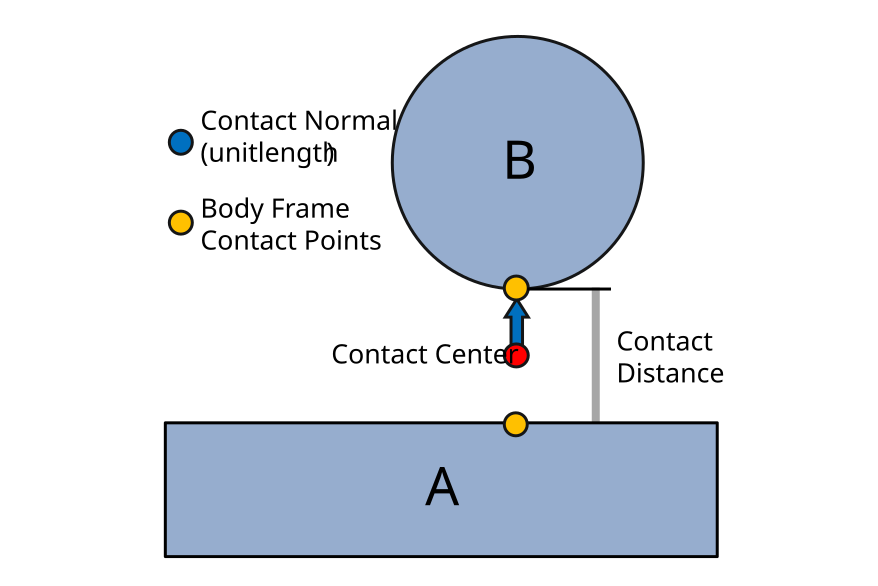
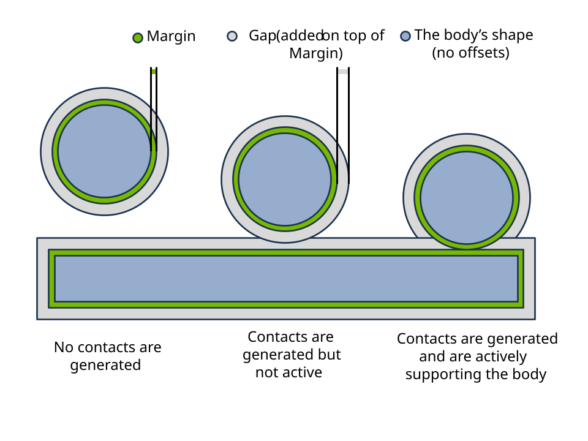

Collisions#
Newton provides a GPU-accelerated collision detection system with:
Full shape-pair coverage — every shape type collides with every other shape type (see Shape Compatibility).
Mesh-mesh contacts via precomputed SDFs for O(1) distance queries on complex geometry.
Hydroelastic contacts that sample contacts across the contact surface for improved fidelity in torsional friction and force distribution, especially in non-convex and manipulation scenarios.
Drop-in replacement for MuJoCo’s contacts — use Newton’s pipeline with
SolverMuJoCofor advanced contact models (see MuJoCo Warp Integration).
This page starts with a conceptual overview of how geometry representations and narrow phase algorithms combine, then covers each stage in detail.
Conceptual Overview#
Newton’s collision pipeline runs in two stages: a broad phase that quickly eliminates shape pairs whose bounding boxes do not overlap, followed by a narrow phase that computes the actual contact geometry for surviving pairs.
The narrow phase algorithm used for a given pair depends on how the shapes are represented:
---
config:
theme: forest
themeVariables:
lineColor: '#76b900'
---
flowchart LR
BP["Broad Phase<br/>(AABB culling)"] --> Triage
subgraph Triage ["Pair Triage"]
G1["Convex / primitive<br/>pairs"]
G2["Mesh pairs<br/>(BVH or SDF)"]
end
subgraph NP ["Narrow Phase"]
A["MPR / GJK"]
B["Distance queries<br/>+ contact reduction"]
C["Hydroelastic<br/>+ contact reduction"]
end
G1 --> A --> Contacts
G2 --> B --> Contacts
G2 -.->|"both shapes<br/>hydroelastic"| C --> Contacts
Geometry representations
Convex hulls and primitives — sphere, box, capsule, cylinder, cone, ellipsoid, and convex mesh shapes expose canonical support functions. These feed directly into the MPR/GJK narrow phase which produces contact points without further reduction. See Narrow Phase Algorithms.
Live BVH queries — triangle meshes that do not have a precomputed SDF are queried through Warp’s BVH (Bounding Volume Hierarchy). This path computes on-the-fly distance queries and generates contacts with optional contact reduction. It works out of the box but can be slow for high-triangle-count meshes. Hydroelastic contacts are not available on this path. See Mesh Collision Handling.
Precomputed SDFs — calling
mesh.build_sdf(...)on a mesh precomputes a signed distance field that provides O(1) distance lookups. Primitive shapes can also generate SDF grids viaShapeConfigSDF parameters (see Shape Configuration). This path supports both distance-query and hydroelastic contact generation (with contact reduction). Hydroelastic contacts require SDF on both shapes in a pair. See Mesh Collision Handling and Hydroelastic Contacts.
Note
Contact reduction applies to the SDF-based and hydroelastic paths where many raw contacts are generated from distance field queries. The direct MPR/GJK path for convex pairs produces a small number of contacts and does not require reduction. See Contact Reduction.
Tip
For scenes with expensive collision (SDF or hydroelastic), running collide once
per frame instead of every substep can significantly improve performance. See
Common Patterns for the different collision-frequency patterns.
Contact Geometry#
The output of the narrow phase is a set of contacts: lightweight geometric descriptors that decouple the solver from the underlying shape complexity. A mesh may contain hundreds of thousands of triangles, but the collision pipeline distills the interaction into a manageable number of contacts that the solver can process efficiently.
Each contact carries the following geometric data:
{kind=link}

A contact between two shapes (A and B). The contact normal (blue, unit length) points from shape A to shape B. Body-frame contact points (yellow) are stored in each body’s local frame. The contact midpoint (red) — the average of the two world-space contact points — is not stored but is useful for visualization and debugging. The contact distance encodes the signed separation or penetration depth.#
Contact normal (world frame) — a unit vector pointing from shape A toward shape B.
Contact points (body frame) — the contact location on each shape (
rigid_contact_point0/1), stored in the parent body’s local coordinate frame.Contact distance — the signed separation between the two contact points along the normal. Negative values indicate penetration.
Because contacts are self-contained geometric objects, the solver never needs to query
mesh triangles or SDF grids — it only works with the contact arrays stored in
Contacts. See Contact Data for the full data layout.
MuJoCo Warp Integration#
SolverMuJoCo (the MuJoCo Warp backend) ships with its own
built-in collision pipeline that handles convex primitive contacts. For many use cases
this is sufficient and requires no extra setup.
Newton’s collision pipeline can also replace MuJoCo’s contact generation, enabling SDF-based mesh-mesh contacts and hydroelastic contacts that MuJoCo’s built-in pipeline does not support.
Examples:
Hydroelastic mesh contacts — newton/examples/contacts/example_nut_bolt_hydro.py
SDF mesh contacts — newton/examples/contacts/example_nut_bolt_sdf.py
Robot manipulation with SDF — newton/examples/contacts/example_brick_stacking.py
See Solver Integration for the full code pattern showing how to configure this.
Collision Pipeline#
Newton’s collision pipeline implementation supports multiple broad phase algorithms and advanced contact models (SDF-based, hydroelastic, cylinder/cone primitives). See Broad Phase and Shape Compatibility for details.
Basic usage:
# Default: creates CollisionPipeline with EXPLICIT broad phase (precomputed pairs)
contacts = model.contacts()
model.collide(state, contacts)
# Or create a pipeline explicitly to choose broad phase mode
from newton import CollisionPipeline
pipeline = CollisionPipeline(
model,
broad_phase="sap",
)
contacts = pipeline.contacts()
pipeline.collide(state, contacts)
Quick Start#
A minimal end-to-end example that creates shapes, runs collision detection, and steps the
solver (see also the Introduction tutorial and
example_basic_shapes.py — newton/examples/basic/example_basic_shapes.py):
import warp as wp
import newton
builder = newton.ModelBuilder()
builder.add_ground_plane()
# Dynamic sphere
body = builder.add_body(xform=wp.transform((0.0, 0.0, 2.0), wp.quat_identity()))
builder.add_shape_sphere(body, radius=0.5)
model = builder.finalize()
solver = newton.solvers.SolverXPBD(model, iterations=5)
state_0 = model.state()
state_1 = model.state()
control = model.control()
contacts = model.contacts()
dt = 1.0 / 60.0 / 10.0
for frame in range(120):
for substep in range(10):
state_0.clear_forces()
model.collide(state_0, contacts)
solver.step(state_0, state_1, control, contacts, dt)
state_0, state_1 = state_1, state_0
Supported Shape Types#
Newton supports the following geometry types via GeoType:
Type |
Description |
|---|---|
|
Infinite plane (ground) |
|
Heightfield terrain (2D elevation grid) |
|
Sphere primitive |
|
Cylinder with hemispherical ends |
|
Axis-aligned box |
|
Cylinder |
|
Cone |
|
Ellipsoid |
|
Triangle mesh (arbitrary, including non-convex) |
|
Convex hull mesh |
Note
SDF is collision data, not a standalone shape type. For mesh shapes, build and attach
an SDF explicitly with mesh.build_sdf(...) and then pass that mesh to
builder.add_shape_mesh(...). For primitive hydroelastic workflows, SDF generation uses
ShapeConfig SDF parameters.
Shapes and Rigid Bodies#
Collision shapes are attached to rigid bodies. Each shape has:
Body index (
shape_body): The rigid body this shape is attached to. Usebody=-1for static/world-fixed shapes.Local transform (
shape_transform): Position and orientation relative to the body frame.Scale (
shape_scale): 3D scale factors applied to the shape geometry.Margin (
shape_margin): Surface offset that shifts where contact points are placed. See Margin and gap semantics.Gap (
shape_gap): Extra detection distance that shifts when contacts are generated. See Margin and gap semantics.Source geometry (
shape_source): Reference to the underlying geometry object (e.g.,Mesh).
During collision detection, shapes are transformed to world space using their parent body’s pose:
# Shape world transform = body_pose * shape_local_transform
X_world_shape = body_q[shape_body] * shape_transform[shape_id]
Contacts are generated between shapes, not bodies. Depending on the type of solver, the motion of the bodies is affected by forces or constraints that resolve the penetrations between their attached shapes.
Collision Filtering#
The collision pipeline uses filtering rules based on world indices and collision groups.
World Indices#
World indices enable multi-world simulations, primarily for reinforcement learning, where objects belonging to different worlds coexist but do not interact through contacts:
Index -1: Global entities that collide with all worlds (e.g., ground plane)
Index 0, 1, 2, …: World-specific entities that only interact within their world
builder = newton.ModelBuilder()
# Global ground (default world -1, collides with all worlds)
builder.add_ground_plane()
# Robot template
robot_builder = newton.ModelBuilder()
body = robot_builder.add_link()
robot_builder.add_shape_sphere(body, radius=0.5)
joint = robot_builder.add_joint_free(body)
robot_builder.add_articulation([joint])
# Instantiate in separate worlds - robots won't collide with each other
builder.add_world(robot_builder) # World 0
builder.add_world(robot_builder) # World 1
model = builder.finalize()
For heterogeneous worlds, use begin_world() and end_world().
For large-scale parallel simulations (e.g., RL), replicate() stamps
out many copies of a template environment builder into separate worlds in one call:
# Template environment: one sphere per world
env_builder = newton.ModelBuilder()
body = env_builder.add_body()
env_builder.add_shape_sphere(body, radius=0.5)
# Combined builder: global geometry + 1024 replicated worlds
main = newton.ModelBuilder()
main.add_ground_plane() # global (world -1), shared across all worlds
main.replicate(env_builder, world_count=1024)
model = main.finalize()
Note
MJWarp does not currently support heterogeneous environments (different models per world).
World indices are stored in shape_world, body_world, etc.
Collision Groups#
Collision groups control which shapes collide within the same world:
Group 0: Collisions disabled
Positive groups (1, 2, …): Collide with same group or any negative group
Negative groups (-1, -2, …): Collide with shapes in any positive or negative group, except shapes in the same negative group
Group A |
Group B |
Collide? |
Reason |
|---|---|---|---|
0 |
Any |
❌ |
Group 0 disables collision |
1 |
1 |
✅ |
Same positive group |
1 |
2 |
❌ |
Different positive groups |
1 |
-2 |
✅ |
Positive with any negative |
-1 |
-1 |
❌ |
Same negative group |
-1 |
-2 |
✅ |
Different negative groups |
builder = newton.ModelBuilder()
# Group 1: only collides with group 1 and negative groups
body1 = builder.add_body()
builder.add_shape_sphere(body1, radius=0.5, cfg=builder.ShapeConfig(collision_group=1))
# Group -1: collides with everything (except other -1)
body2 = builder.add_body()
builder.add_shape_sphere(body2, radius=0.5, cfg=builder.ShapeConfig(collision_group=-1))
model = builder.finalize()
Self-collision within articulations
Self-collisions within an articulation can be enabled or disabled with enable_self_collisions when loading models. By default, adjacent body collisions (parent-child pairs connected by joints) are disabled via collision_filter_parent=True.
# Enable self-collisions when loading models
builder.add_usd("robot.usda", enable_self_collisions=True)
builder.add_mjcf("robot.xml", enable_self_collisions=True)
# Or control per-shape (also applies to max-coordinate jointed bodies)
cfg = builder.ShapeConfig(collision_group=-1, collision_filter_parent=False)
Controlling particle collisions
Use has_shape_collision and has_particle_collision for fine-grained control over what a shape collides with. Setting both to False is equivalent to collision_group=0.
builder = newton.ModelBuilder()
# Shape that only collides with particles (not other shapes)
cfg = builder.ShapeConfig(has_shape_collision=False, has_particle_collision=True)
# Shape that only collides with other shapes (not particles)
cfg = builder.ShapeConfig(has_shape_collision=True, has_particle_collision=False)
UsdPhysics Collision Filtering#
Newton follows the UsdPhysics collision filtering specification, which provides two complementary mechanisms for controlling which shapes collide:
Collision Groups - Group-based filtering using
UsdPhysicsCollisionGroupPairwise Filtering - Explicit shape pair exclusions using
physics:filteredPairs
Collision Groups
In UsdPhysics, shapes can be assigned to collision groups defined by UsdPhysicsCollisionGroup prims.
When importing USD files, Newton reads the collisionGroups attribute from each shape and maps
each unique collision group name to a positive integer ID (starting from 1). Shapes in different
collision groups will not collide with each other unless their groups are configured to interact.
# Define a collision group in USD
def "CollisionGroup_Robot" (
prepend apiSchemas = ["PhysicsCollisionGroup"]
) {
}
# Assign shape to a collision group
def Sphere "RobotPart" (
prepend apiSchemas = ["PhysicsCollisionAPI"]
) {
rel physics:collisionGroup = </CollisionGroup_Robot>
}
When loading this USD, Newton automatically assigns each collision group a unique integer ID
and sets the shape’s collision_group accordingly.
Pairwise Filtering
For fine-grained control, UsdPhysics supports explicit pair filtering via the physics:filteredPairs
relationship. This allows excluding specific shape pairs from collision detection regardless of their
collision groups.
# Exclude specific shape pairs in USD
def Sphere "ShapeA" (
prepend apiSchemas = ["PhysicsCollisionAPI"]
) {
rel physics:filteredPairs = [</ShapeB>]
}
Newton reads these relationships during USD import and converts them to
shape_collision_filter_pairs.
Collision Enabled Flag
Shapes with physics:collisionEnabled=false are excluded from all collisions by adding filter
pairs against all other shapes in the scene.
Shape Collision Filter Pairs#
The shape_collision_filter_pairs list stores explicit shape pair exclusions.
This is Newton’s internal representation for pairwise filtering (including pairs imported from
UsdPhysics physics:filteredPairs relationships).
builder = newton.ModelBuilder()
# Add shapes
body = builder.add_body()
shape_a = builder.add_shape_sphere(body, radius=0.5)
shape_b = builder.add_shape_box(body, hx=0.5, hy=0.5, hz=0.5)
# Exclude this specific pair from collision detection
builder.add_shape_collision_filter_pair(shape_a, shape_b)
Filter pairs are automatically populated in several cases:
Adjacent bodies: Parent-child body pairs connected by joints (when
collision_filter_parent=True). Also applies to max-coordinate jointed bodies.Same-body shapes: Shapes attached to the same rigid body
Disabled self-collision: All shape pairs within an articulation when
enable_self_collisions=FalseUSD filtered pairs: Pairs defined by
physics:filteredPairsrelationships in USD filesUSD collision disabled: Shapes with
physics:collisionEnabled=false(filtered against all other shapes)
The resulting filter pairs are stored in shape_collision_filter_pairs as a set of
(shape_index_a, shape_index_b) tuples (canonical order: a < b).
USD Import Example
# Newton automatically imports UsdPhysics collision filtering
builder = newton.ModelBuilder()
builder.add_usd("scene.usda")
# Collision groups and filter pairs are now populated:
# - shape_collision_group: integer IDs mapped from UsdPhysicsCollisionGroup
# - shape_collision_filter_pairs: pairs from physics:filteredPairs relationships
model = builder.finalize()
Broad Phase and Shape Compatibility#
CollisionPipeline provides configurable broad phase algorithms:
Mode |
Description |
|---|---|
NxN |
All-pairs AABB broad phase. O(N²), optimal for small scenes (<100 shapes). |
SAP |
Sweep-and-prune AABB broad phase. O(N log N), better for larger scenes with spatial coherence. |
EXPLICIT |
Uses precomputed shape pairs (default). Combines static pair efficiency with advanced contact algorithms. |
from newton import CollisionPipeline
# Default: EXPLICIT (precomputed pairs)
pipeline = CollisionPipeline(model)
# NxN for small scenes
pipeline = CollisionPipeline(model, broad_phase="nxn")
# SAP for larger scenes
pipeline = CollisionPipeline(model, broad_phase="sap")
contacts = pipeline.contacts()
pipeline.collide(state, contacts)
Shape Compatibility#
Shape compatibility summary (rigid + soft particle-shape):
Plane |
HField |
Sphere |
Capsule |
Box |
Cylinder |
Cone |
Ellipsoid |
ConvexHull |
Mesh |
SDF |
Particle |
|
|---|---|---|---|---|---|---|---|---|---|---|---|---|
Plane |
[1] |
[1] |
✅ |
✅ |
✅ |
✅ |
✅ |
✅ |
✅ |
✅ |
✅ |
✅ |
HField |
[1] |
[1] |
✅ |
✅ |
✅ |
✅ |
✅ |
✅ |
✅ |
✅⚠️ |
✅ |
✅ |
Sphere |
✅ |
✅ |
✅ |
✅ |
✅ |
✅ |
✅ |
✅ |
✅ |
✅ |
✅ |
✅ |
Capsule |
✅ |
✅ |
✅ |
✅ |
✅ |
✅ |
✅ |
✅ |
✅ |
✅ |
✅ |
✅ |
Box |
✅ |
✅ |
✅ |
✅ |
✅ |
✅ |
✅ |
✅ |
✅ |
✅ |
✅ |
✅ |
Cylinder |
✅ |
✅ |
✅ |
✅ |
✅ |
✅ |
✅ |
✅ |
✅ |
✅ |
✅ |
✅ |
Cone |
✅ |
✅ |
✅ |
✅ |
✅ |
✅ |
✅ |
✅ |
✅ |
✅ |
✅ |
✅ |
Ellipsoid |
✅ |
✅ |
✅ |
✅ |
✅ |
✅ |
✅ |
✅ |
✅ |
✅ |
✅ |
✅ |
ConvexHull |
✅ |
✅ |
✅ |
✅ |
✅ |
✅ |
✅ |
✅ |
✅ |
✅ |
✅ |
✅ |
Mesh |
✅ |
✅⚠️ |
✅ |
✅ |
✅ |
✅ |
✅ |
✅ |
✅ |
✅⚠️ |
✅⚠️ |
✅ |
SDF |
✅ |
✅ |
✅ |
✅ |
✅ |
✅ |
✅ |
✅ |
✅ |
✅⚠️ |
✅ |
✅ |
Particle |
✅ |
✅ |
✅ |
✅ |
✅ |
✅ |
✅ |
✅ |
✅ |
✅ |
✅ |
[2] |
Legend: ⚠️ = Can be slow for meshes with high triangle counts; performance can
often be improved by attaching a precomputed SDF to the mesh (mesh.build_sdf(...)).
Note
Particle in this table refers to soft particle-shape contacts generated
automatically by the collision pipeline. These contacts additionally require
the shape to have particle collision enabled
(ShapeFlags.COLLIDE_PARTICLES / ShapeConfig.has_particle_collision).
For examples, see cloth and cable scenes that use the collision pipeline for
particle-shape contacts.
Note
Heightfield representation: A heightfield (HFIELD) stores a regular 2D grid
of elevation samples. For rigid contacts, Newton uses dedicated heightfield
narrow-phase routes: heightfield-vs-convex uses per-cell triangle GJK/MPR, while
mesh-vs-heightfield routes through the mesh/SDF path with on-the-fly triangle
extraction from the grid. For soft contacts, the collision pipeline automatically
samples the heightfield signed distance and normal.
Note
SDF in this table refers to shapes with precomputed SDF data. There is no
GeoType.SDF enum value; this row is a conceptual collision mode for shapes
carrying SDF resources. Mesh SDFs are attached through mesh.build_sdf(...)
and provide O(1) distance queries.
Narrow Phase Algorithms#
After broad phase identifies candidate pairs, the narrow phase generates contact points. The algorithm used depends on the shape types in each pair.
Convex Primitive Contacts#
MPR (Minkowski Portal Refinement) and GJK
MPR is the primary algorithm for convex shape pairs. It uses support mapping functions to find the closest points between shapes via Minkowski difference sampling. Works with all convex primitives (sphere, box, capsule, cylinder, cone, ellipsoid) and convex meshes. Newton uses MPR for penetration depth computation (not EPA); GJK handles the separated-shapes distance query.
Multi-contact generation
For convex primitive pairs, multiple contact points are generated for stable stacking and
resting contacts. The collision pipeline estimates buffer sizes based on the model; you
can override this value with rigid_contact_max when instantiating the pipeline.
Mesh Collision Handling#
Mesh collisions use different strategies depending on the pair type:
Mesh vs Primitive (e.g., Sphere, Box)
Uses BVH (Bounding Volume Hierarchy) queries to find nearby triangles, then generates contacts between primitive vertices and triangle surfaces, plus triangle vertices against the primitive.
Mesh vs Plane
Projects mesh vertices onto the plane and generates contacts for vertices below the plane surface.
Mesh vs Mesh
Two approaches available:
BVH-based (default when no SDF configured): Iterates mesh vertices against the other mesh’s BVH. Performance scales with triangle count - can be very slow for complex meshes.
SDF-based (recommended): Uses precomputed signed distance fields for fast queries. For mesh shapes, call
mesh.build_sdf(...)once and reuse the mesh.
Warning
If SDF is not precomputed, mesh-mesh contacts fall back to on-the-fly BVH distance queries which are significantly slower. For production use with complex meshes, precompute and attach SDF data on meshes:
my_mesh.build_sdf(max_resolution=64)
builder.add_shape_mesh(body, mesh=my_mesh)
Tip
Build an SDF on every mesh that can collide, even when high-precision contacts are
not required. A low-resolution SDF (e.g., max_resolution=64) uses very little memory
yet still provides O(1) distance queries that are dramatically faster than the BVH
fallback. Without an SDF, mesh-vs-mesh and mesh-vs-primitive contacts must walk the BVH
for every query point, which dominates collision cost in most scenes. Attaching even a
coarse SDF eliminates this bottleneck.
build_sdf() accepts several optional keyword arguments
(defaults shown in parentheses):
mesh.build_sdf(
max_resolution=256, # Max voxels along longest AABB axis; must be divisible by 8 (None)
narrow_band_range=(-0.005, 0.005), # SDF narrow band [m] ((-0.1, 0.1))
margin=0.005, # Extra AABB padding [m] (0.05)
shape_margin=0.001, # Shrink SDF surface inward [m] (0.0)
scale=(1.0, 1.0, 1.0), # Bake non-unit scale into the SDF (None)
)
max_resolution sets the voxel count along the longest AABB axis (must be divisible by 8);
voxel size is uniform across all axes. Use target_voxel_size instead to specify resolution
in meters directly — it takes precedence over max_resolution when both are provided. Use
narrow_band_range to limit the SDF computation to a thin shell around the surface (saves
memory and build time). Set the SDF margin to at least the sum of the shape’s margin and gap so the SDF covers the
full contact detection range. Pass scale when the shape will be added with non-unit scale
to bake it into the SDF grid. shape_margin is mainly useful for hydroelastic collision
where a compliant-layer offset is desired.
Mesh simplification for collision
For imported models (URDF, MJCF, USD) whose visual meshes are too detailed for efficient
collision, approximate_meshes() replaces mesh collision shapes
with convex hulls, bounding boxes, or convex decompositions:
builder.add_usd("robot.usda")
# Replace all collision meshes with convex hulls (default)
builder.approximate_meshes()
# Or target specific shapes and keep visual geometry
builder.approximate_meshes(
method="convex_hull",
shape_indices=non_finger_shapes,
keep_visual_shapes=True,
)
Supported methods: "convex_hull" (default), "bounding_box", "bounding_sphere",
"coacd" (convex decomposition), "vhacd".
Note
approximate_meshes() modifies the builder’s shape geometry in-place. By default
(keep_visual_shapes=False), the original mesh is replaced for both collision and
rendering. Pass keep_visual_shapes=True to preserve the original mesh as a
visual-only shape alongside the simplified collision shape.
Contact Reduction#
Contact reduction is enabled by default. For scenes with many mesh-mesh interactions that generate thousands of contacts, reduction selects a significantly smaller representative set that maintains stable contact behavior while improving solver performance.
How it works:
Contacts are binned by normal direction (polyhedron face directions)
Within each bin, contacts are scored by spatial distribution and penetration depth
Representative contacts are selected to preserve coverage and depth cues
To disable reduction, set reduce_contacts=False when creating the pipeline.
Configuring contact reduction (HydroelasticSDF.Config):
For hydroelastic and SDF-based contacts, use Config to tune reduction behavior:
from newton.geometry import HydroelasticSDF
config = HydroelasticSDF.Config(
reduce_contacts=True, # Enable contact reduction (default)
buffer_fraction=0.2, # Reduce GPU buffer allocations (default: 1.0)
normal_matching=True, # Align reduced normals with aggregate force
anchor_contact=False, # Optional center-of-pressure anchor contact
)
pipeline = CollisionPipeline(model, sdf_hydroelastic_config=config)
Other reduction options:
Parameter |
Description |
|---|---|
|
Rotates selected contact normals so their weighted sum aligns with the aggregate force direction from all unreduced contacts. Preserves net force direction after reduction. Default: True. |
|
Adds an anchor contact at the center of pressure for each normal bin to better preserve moments. Default: False. |
|
Lower bound on contact area. Hydroelastic stiffness is |
Shape Configuration#
Shape collision behavior is controlled via ShapeConfig:
Collision control:
Parameter |
Description |
|---|---|
|
Collision group ID. 0 disables collisions. Default: 1. |
|
Filter collisions with adjacent body (parent in articulation or connected via joint). Default: True. |
|
Whether shape collides with other shapes. Default: True. |
|
Whether shape collides with particles. Default: True. |
Geometry parameters:
Parameter |
Description |
|---|---|
|
Surface offset used by narrow phase. Pairwise effect is additive ( |
|
Additional detection threshold. Pairwise effect is additive ( |
|
Whether shape is solid or hollow. Affects inertia and SDF sign. Default: True. |
|
Whether the shape uses SDF-based hydroelastic contacts. Both shapes in a pair must have this enabled. See Hydroelastic Contacts. Default: False. |
|
Contact stiffness for hydroelastic collisions. Used by MuJoCo, Featherstone, SemiImplicit when |
Margin and gap semantics (where vs when):
Where contacts are placed is controlled by
margin.When contacts are generated is controlled by
gap.
For a shape pair (a, b):
Pair margin:
m = margin_a + margin_bPair gap:
g = gap_a + gap_bSurface distance (true geometry, no offsets):
sContact-space distance used by Newton:
d = s - m
Contacts are generated when:
Broad phase uses the same idea by expanding each shape AABB by:
This keeps broad-phase culling and narrow-phase contact generation consistent.
The solver enforces d >= 0, so objects at rest settle with surfaces separated
by margin_a + margin_b.
{kind=link}

Margin sets contact location (surface offset), while gap adds speculative detection distance on top of margin. Left: no contact generated. Middle: contact generated but not yet active. Right: active contact support.#
SDF configuration (primitive generation defaults):
Parameter |
Description |
|---|---|
|
Maximum SDF grid dimension (must be divisible by 8) for primitive SDF generation. |
|
Target voxel size for primitive SDF generation. Takes precedence over |
|
SDF narrow band distance range (inner, outer). Default: (-0.1, 0.1). |
The configure_sdf() helper sets SDF and hydroelastic
options in one call:
builder = newton.ModelBuilder()
cfg = builder.ShapeConfig()
cfg.configure_sdf(max_resolution=64, is_hydroelastic=True, kh=1.0e11)
Example (mesh SDF workflow):
cfg = builder.ShapeConfig(
collision_group=-1, # Collide with everything
margin=0.001, # 1mm margin
gap=0.01, # 1cm detection gap
)
my_mesh.build_sdf(max_resolution=64)
builder.add_shape_mesh(body, mesh=my_mesh, cfg=cfg)
Builder default gap:
The builder’s rigid_gap (default 0.1) applies to shapes without explicit gap. Alternatively, use builder.default_shape_cfg.gap.
Common Patterns#
Creating static/ground geometry
Use body=-1 to attach shapes to the static world frame:
builder = newton.ModelBuilder()
# Static ground plane
builder.add_ground_plane() # Convenience method
# Or manually create static shapes
builder.add_shape_plane(body=-1, xform=wp.transform_identity())
builder.add_shape_box(body=-1, hx=5.0, hy=5.0, hz=0.1) # Static floor
Setting default shape configuration
Use builder.default_shape_cfg to set defaults for all shapes:
builder = newton.ModelBuilder()
# Set defaults before adding shapes
builder.default_shape_cfg.ke = 1.0e6
builder.default_shape_cfg.kd = 1000.0
builder.default_shape_cfg.mu = 0.5
builder.default_shape_cfg.is_hydroelastic = True
builder.default_shape_cfg.sdf_max_resolution = 64 # Primitive SDF defaults
Collision frequency in the simulation loop
There are two common patterns for when to call collide relative to the substep loop:
Every substep (most accurate, used by most basic examples):
for frame in range(num_frames):
for substep in range(sim_substeps):
model.collide(state_0, contacts)
solver.step(state_0, state_1, control, contacts, dt=sim_dt)
state_0, state_1 = state_1, state_0
Once per frame (faster, common for hydroelastic/SDF-heavy scenes):
for frame in range(num_frames):
contacts = model.collide(state_0, collision_pipeline=pipeline)
for substep in range(sim_substeps):
solver.step(state_0, state_1, control, contacts, dt=sim_dt)
state_0, state_1 = state_1, state_0
Another pattern is to run collision detection every N substeps for a middle ground:
for frame in range(num_frames):
for substep in range(sim_substeps):
if substep % collide_every_n == 0:
pipeline.collide(state_0, contacts)
solver.step(state_0, state_1, control, contacts, dt=sim_dt)
state_0, state_1 = state_1, state_0
Soft contacts (particle-shape)
Soft contacts are generated automatically when particles are present. They use a separate margin:
# Set soft contact margin
pipeline = CollisionPipeline(model, soft_contact_margin=0.01)
contacts = pipeline.contacts()
pipeline.collide(state, contacts)
# Access soft contact data
n_soft = contacts.soft_contact_count.numpy()[0]
particles = contacts.soft_contact_particle.numpy()[:n_soft]
shapes = contacts.soft_contact_shape.numpy()[:n_soft]
Contact Data#
The Contacts class stores the results from the collision detection step
and is consumed by the solver step() method for contact handling.
Rigid contacts:
Attribute |
Description |
|---|---|
|
Number of active rigid contacts (scalar). |
|
Indices of colliding shapes. |
|
Contact point on each shape (body frame). This is the narrow-phase contact location used by the solver for the normal constraint and lever-arm computation. |
|
Body-frame friction-anchor offset per shape, equal to the contact normal scaled
by |
|
Contact normal, pointing from shape 0 toward shape 1 (world frame). |
|
Per-shape thickness: effective radius + margin (scalar). |
Soft contacts (particle-shape):
Attribute |
Description |
|---|---|
|
Number of active soft contacts. |
|
Particle indices. |
|
Shape indices. |
|
Contact position and velocity on shape. |
|
Contact normal. |
Extended contact attributes (see Extended Contact Attributes):
Attribute |
Description |
|---|---|
Contact spatial forces (used by |
Example usage:
contacts = model.contacts()
model.collide(state, contacts)
n = contacts.rigid_contact_count.numpy()[0]
points0 = contacts.rigid_contact_point0.numpy()[:n]
points1 = contacts.rigid_contact_point1.numpy()[:n]
normals = contacts.rigid_contact_normal.numpy()[:n]
# Shape indices
shape0 = contacts.rigid_contact_shape0.numpy()[:n]
shape1 = contacts.rigid_contact_shape1.numpy()[:n]
Differentiable Contacts#
When requires_grad=True, the Contacts object provides an
additional set of differentiable rigid-contact arrays that participate in
wp.Tape autodiff. These arrays give first-order gradients of contact
distance and world-space contact points with respect to body poses
(state.body_q).
Note
Rigid-contact differentiability is experimental. Accuracy and fitness for real-world optimization or learning workflows should be validated case by case before relying on these gradients.
Making the full narrow-phase pipeline differentiable end-to-end would be
prohibitively expensive and numerically fragile — iterative GJK/MPR solvers,
BVH traversals, and discrete contact-set changes all introduce discontinuities
or ill-conditioned gradients. Newton therefore keeps the narrow phase frozen
(enable_backward=False) and applies a lightweight post-processing step:
it re-reads the contact geometry produced by the narrow phase (body-local
points, world normal, margins) and reconstructs the world-space quantities
through the differentiable body_q. The result is a first-order
tangent-plane approximation that is cheap, stable, and sufficient for most
gradient-based optimization and reinforcement-learning workflows.
Differentiable arrays (allocated only when requires_grad=True):
Attribute |
Description |
|---|---|
|
Signed contact distance [m] (negative = penetration). |
|
World-space contact normal (A → B). |
|
World-space contact point on shape 0 [m]. |
|
World-space contact point on shape 1 [m]. |
Gradients flow through the contact points and distance; the normal direction is treated as a frozen constant.
builder = newton.ModelBuilder(gravity=0.0)
body = builder.add_body(xform=wp.transform((0.0, 0.0, 0.3)))
builder.add_shape_sphere(body=body, radius=0.5)
builder.add_ground_plane()
model = builder.finalize(requires_grad=True)
pipeline = newton.CollisionPipeline(model)
contacts = pipeline.contacts()
state = model.state(requires_grad=True)
with wp.Tape() as tape:
pipeline.collide(state, contacts)
# Backpropagate through differentiable distance
tape.backward(grads={
contacts.rigid_contact_diff_distance: wp.ones(
contacts.rigid_contact_max, dtype=float
)
})
grad_body_q = tape.gradients[state.body_q]
Note
The standard (non-differentiable) rigid-contact arrays
(rigid_contact_point0, rigid_contact_normal, etc.) are unaffected and
remain available for solvers. The rigid_contact_diff_* arrays are an
additional output intended for gradient-based optimization and ML workflows.
Creating and Populating Contacts#
contacts() creates a Contacts buffer using a default
CollisionPipeline (EXPLICIT broad phase, cached on first call).
collide() populates it and returns the Contacts object:
contacts = model.contacts()
model.collide(state, contacts)
The contacts buffer can be reused across steps – collide clears it each time.
Both methods accept an optional collision_pipeline keyword to override the default
pipeline. When contacts is omitted from collide, a buffer is allocated automatically:
from newton import CollisionPipeline
pipeline = CollisionPipeline(
model,
broad_phase="sap",
rigid_contact_max=50000,
)
# Option A: explicit buffer
contacts = pipeline.contacts()
pipeline.collide(state, contacts)
# Option B: use model helpers with a custom pipeline
contacts = model.contacts(collision_pipeline=pipeline)
model.collide(state, contacts)
# Option C: let collide allocate the buffer for you
contacts = model.collide(state, collision_pipeline=pipeline)
Hydroelastic Contacts#
Hydroelastic contacts are an opt-in feature that generates contact areas (not just points) using SDF-based collision detection. This provides more realistic and continuous force distribution, particularly useful for robotic manipulation scenarios.
Default behavior (hydroelastic disabled):
When is_hydroelastic=False (default), shapes use hard SDF contacts - point contacts computed from SDF distance queries. This is efficient and suitable for most rigid body simulations.
Opt-in hydroelastic behavior:
When is_hydroelastic=True on both shapes in a pair, the system generates distributed contact areas instead of point contacts. This is useful for:
More stable and continuous contact forces for non-convex shape interactions
Better force distribution across large contact patches
Realistic friction behavior for flat-on-flat contacts
Requirements:
Both shapes in a pair must have
is_hydroelastic=TrueShapes must have SDF data available: - mesh shapes: call
mesh.build_sdf(...)- primitive shapes: usesdf_max_resolutionorsdf_target_voxel_sizeinShapeConfigFor non-unit shape scale, the attached SDF must be scale-baked
Only volumetric shapes supported (not planes, heightfields, or non-watertight meshes)
builder = newton.ModelBuilder()
body = builder.add_body()
cfg = builder.ShapeConfig(
is_hydroelastic=True, # Opt-in to hydroelastic contacts
sdf_max_resolution=64, # Required for hydroelastic
kh=1.0e11, # Contact stiffness
)
builder.add_shape_box(body, hx=0.5, hy=0.5, hz=0.5, cfg=cfg)
How it works:
SDF intersection finds overlapping regions between shapes
Marching cubes extracts the contact iso-surface
Contact points are distributed across the surface area
Optional contact reduction selects representative points
Hydroelastic stiffness (kh):
The kh parameter on each shape controls area-dependent contact stiffness. For a pair, the effective stiffness is computed as the harmonic mean: k_eff = 2 * k_a * k_b / (k_a + k_b). Tune this for desired penetration behavior.
Contact reduction options for hydroelastic contacts are configured via Config (see Contact Reduction).
Hydroelastic memory can be tuned with buffer_fraction on
Config. This scales broadphase, iso-refinement,
and hydroelastic face-contact buffer allocations as a fraction of the worst-case
size. Lower values reduce memory usage but also reduce overflow headroom.
from newton.geometry import HydroelasticSDF
config = HydroelasticSDF.Config(
reduce_contacts=True,
buffer_fraction=0.2, # 20% of worst-case (default: 1.0)
)
The default buffer_fraction is 1.0 (full worst-case allocation). Lowering it
reduces GPU memory usage but may cause overflow in dense contact scenes.
If runtime overflow warnings appear, increase buffer_fraction (or stage-specific
buffer_mult_* values) until warnings disappear in your target scenes.
Contact Materials#
Shape material properties control contact resolution. Configure via ShapeConfig:
Property |
Description |
Solvers |
Default |
ShapeConfig |
Model Array |
|---|---|---|---|---|---|
|
Dynamic friction coefficient |
All |
1.0 |
||
|
Contact elastic stiffness |
SemiImplicit, Featherstone, MuJoCo |
2.5e3 |
||
|
Contact damping |
SemiImplicit, Featherstone, MuJoCo |
100.0 |
||
|
Friction damping coefficient |
SemiImplicit, Featherstone |
1000.0 |
||
|
Adhesion distance |
SemiImplicit, Featherstone |
0.0 |
||
|
Bounciness (requires |
XPBD |
0.0 |
||
|
Resistance to spinning at contact |
XPBD, MuJoCo |
0.005 |
||
|
Resistance to rolling motion |
XPBD, MuJoCo |
0.0001 |
||
|
Hydroelastic stiffness |
SemiImplicit, Featherstone, MuJoCo |
1.0e10 |
Note
Material properties interact differently with each solver. ke, kd, kf, and ka
are used by force-based solvers (SemiImplicit, Featherstone, MuJoCo), while restitution
only applies to XPBD. See the newton.solvers API reference for solver-specific
behavior.
Example:
builder = newton.ModelBuilder()
cfg = builder.ShapeConfig(
mu=0.8, # High friction
ke=1.0e6, # Stiff contact
kd=1000.0, # Damping
restitution=0.5, # Bouncy (XPBD only)
)
USD Integration#
Custom collision properties can be authored in USD:
def Xform "Box" (
prepend apiSchemas = ["PhysicsRigidBodyAPI", "PhysicsCollisionAPI"]
) {
custom int newton:collision_group = 1
custom int newton:world = 0
custom float newton:contact_ke = 100000.0
custom float newton:contact_kd = 1000.0
custom float newton:contact_kf = 1000.0
custom float newton:contact_ka = 0.0
custom float newton:margin = 0.00001
}
See Custom Attributes and USD Parsing and Schema Resolver System for details.
Performance#
Use EXPLICIT (default) when collision pairs are limited (<100 shapes with most pairs filtered)
Use SAP for >100 shapes with spatial coherence
Use NxN for small scenes (<100 shapes) or uniform spatial distribution
Minimize global entities (world=-1) as they interact with all worlds
Use positive collision groups to reduce candidate pairs
Use world indices for parallel simulations (essential for RL with many environments)
Contact reduction is enabled by default for mesh-heavy scenes
Pass
rigid_contact_maxtoCollisionPipelineto limit memory in complex scenesUse
approximate_meshes()to replace detailed visual meshes with convex hulls for collisionUse
viewer.log_contacts(contacts, state)in the render loop to visualize contact points and normals for debugging
Troubleshooting
No contacts generated? Check that both shapes have compatible
collision_groupvalues (group 0 disables collision) and belong to the same world index.Mesh-mesh contacts slow? Attach an SDF with
mesh.build_sdf(...)— without it, Newton falls back to O(N) BVH vertex queries.Objects tunneling through each other? Increase
gapto detect contacts earlier, or increase substep count (decrease simulationdt).Hydroelastic buffer overflow warnings? Increase
buffer_fractioninConfig.
CUDA graph capture
On CUDA devices, the simulation loop (including collide and solver.step) can be
captured into a CUDA graph with wp.ScopedCapture for reduced kernel launch overhead.
Place collide inside the captured region so it is replayed each frame:
if wp.get_device().is_cuda:
with wp.ScopedCapture() as capture:
model.collide(state_0, contacts)
for _ in range(sim_substeps):
solver.step(state_0, state_1, control, contacts, dt)
state_0, state_1 = state_1, state_0
graph = capture.graph
# Each frame:
wp.capture_launch(graph)
Solver Integration#
Newton’s collision pipeline works with all built-in solvers
(SolverXPBD, SolverVBD,
SolverSemiImplicit, SolverFeatherstone,
SolverMuJoCo). Pass the Contacts
object to step():
solver.step(state_0, state_1, control, contacts, dt)
MuJoCo solver (see also MuJoCo Warp Integration)
By default (use_mujoco_contacts=True), SolverMuJoCo runs its own
contact generation and the contacts argument to step should be None.
To replace MuJoCo’s contact generation with Newton’s pipeline — enabling advanced contact models
(SDF, hydroelastic) — set use_mujoco_contacts=False and pass a populated
Contacts object to step():
pipeline = newton.CollisionPipeline(model, broad_phase="sap")
solver = newton.solvers.SolverMuJoCo(
model,
use_mujoco_contacts=False,
)
contacts = pipeline.contacts()
for step in range(num_steps):
pipeline.collide(state_0, contacts)
solver.step(state_0, state_1, control, contacts, dt=1.0/60.0)
state_0, state_1 = state_1, state_0
Advanced Customization#
CollisionPipeline covers the vast majority of use cases, but Newton also
exposes the underlying broad phase, narrow phase, and primitive collision building blocks
for users who need full control — for example, writing contacts in a custom format,
implementing a domain-specific culling strategy, or integrating Newton’s collision
detection into an external solver.
Pipeline stages
The standard pipeline runs three stages:
AABB computation — shape bounding boxes in world space.
Broad phase — identifies candidate shape pairs whose AABBs overlap.
Narrow phase — generates contacts for each candidate pair.
You can replace or compose these stages independently.
Broad phase classes
All broad phase classes expose a launch method that writes candidate pairs
(wp.array(dtype=wp.vec2i)) and a pair count:
Class |
Description |
|---|---|
All-pairs O(N²) AABB test. Accepts |
|
Sweep-and-prune. Same interface, with optional |
|
Tests precomputed |
from newton.geometry import BroadPhaseSAP
bp = BroadPhaseSAP(model.shape_world, model.shape_flags)
bp.launch(
shape_lower=shape_aabb_lower,
shape_upper=shape_aabb_upper,
shape_gap=model.shape_gap,
shape_collision_group=model.shape_collision_group,
shape_world=model.shape_world,
shape_count=model.shape_count,
candidate_pair=candidate_pair_buffer,
candidate_pair_count=candidate_pair_count,
device=device,
)
Narrow phase
NarrowPhase accepts the candidate pairs from any broad phase and
generates contacts:
from newton.geometry import NarrowPhase
narrow_phase = NarrowPhase(
max_candidate_pairs=10000,
reduce_contacts=True,
device=device,
)
narrow_phase.launch(
candidate_pair=candidate_pairs,
candidate_pair_count=pair_count,
shape_types=...,
shape_data=...,
shape_transform=...,
# ... remaining geometry arrays from Model
contact_pair=out_pairs,
contact_position=out_positions,
contact_normal=out_normals,
contact_penetration=out_depths,
contact_count=out_count,
device=device,
)
To write contacts in a custom format, pass a contact_writer_warp_func (a Warp
@wp.func) to the constructor to define the per-contact write logic, then call
launch_custom_write instead of launch, providing a writer_data struct that
matches your writer function. Together these give full control over how and where contacts
are stored.
Primitive collision functions
For per-pair queries outside the pipeline, newton.geometry exports Warp device
functions (@wp.func) for specific shape combinations:
collide_sphere_sphere,collide_sphere_capsule,collide_sphere_box,collide_sphere_cylindercollide_capsule_capsule,collide_capsule_boxcollide_box_boxcollide_plane_sphere,collide_plane_capsule,collide_plane_box,collide_plane_cylinder,collide_plane_ellipsoid
These return signed distance (negative = penetration), contact position, and contact
normal. Multi-contact variants (e.g., collide_box_box) return fixed-size vectors with
unused slots set to MAXVAL. Because they are @wp.func, they must be called from
within Warp kernels.
GJK, MPR, and multi-contact generators
For convex shapes that lack a dedicated collide_* function, Newton provides
factory functions that create Warp device functions from a support-map interface:
create_solve_mpr(support_func)— Minkowski Portal Refinement for boolean collision and signed distance.create_solve_closest_distance(support_func)— GJK closest-point query.create_solve_convex_multi_contact(support_func, writer_func, post_process_contact)— generates a stable multi-contact manifold and writes results through a callback.
Note
These factory functions are internal building blocks available from
newton._src.geometry. They are not part of the public API and may change between
releases, but are accessible for advanced users building custom narrow-phase routines.
See Also#
Imports:
import newton
from newton import (
CollisionPipeline,
Contacts,
GeoType,
)
from newton.geometry import (
BroadPhaseAllPairs,
BroadPhaseExplicit,
BroadPhaseSAP,
HydroelasticSDF,
NarrowPhase,
)
API Reference:
contacts()- Create a contacts buffer (acceptscollision_pipeline=)collide()- Run collision detection (acceptscollision_pipeline=, returnsContacts)CollisionPipeline- Collision pipeline with configurable broad phasebroad_phase- Broad phase algorithm:"nxn","sap", or"explicit"Contacts- Contact data containerGeoType- Shape geometry typesShapeConfig- Shape configuration optionsconfigure_sdf()- Set SDF and hydroelastic options in one callConfig- Hydroelastic contact configurationcontacts()- Allocate a contacts buffer for a custom pipelinebuild_sdf()- Precompute SDF for a meshapproximate_meshes()- Replace mesh collision shapes with simpler geometryreplicate()- Stamp out multi-world copies of a template builderBroadPhaseAllPairs,BroadPhaseSAP,BroadPhaseExplicit- Broad phase implementationsNarrowPhase- Narrow phase contact generation
Model attributes:
shape_collision_group- Per-shape collision groupsshape_world- Per-shape world indicesshape_gap- Per-shape contact gaps (detection threshold)shape_margin- Per-shape margin values (signed distance padding)
Related documentation:
newton.solvers - Solver API reference (material property behavior per solver)
Custom Attributes - USD custom attributes for collision properties
USD Parsing and Schema Resolver System - USD import options including collision settings
Sites (Abstract Markers) - Non-colliding reference points